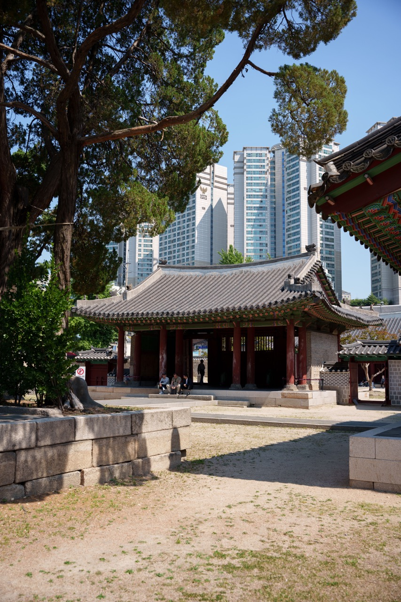
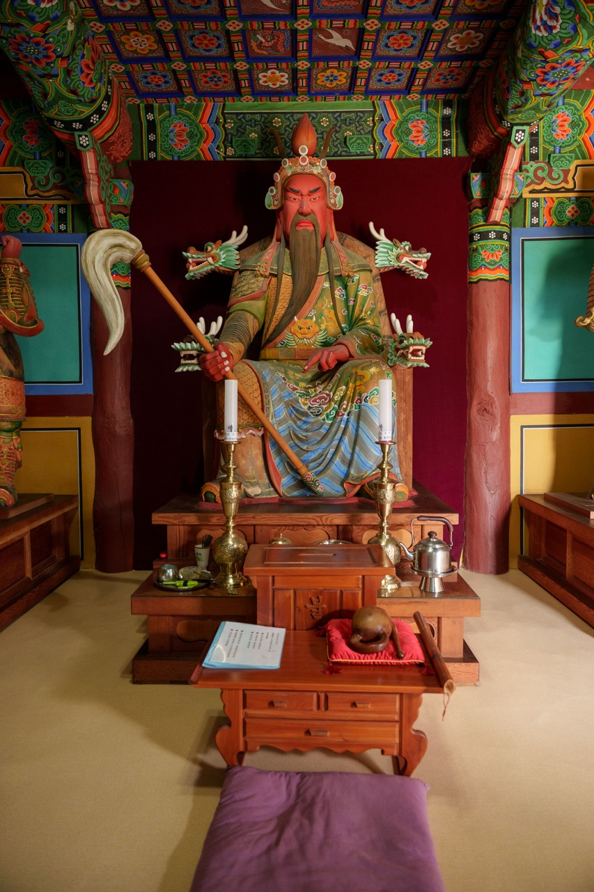
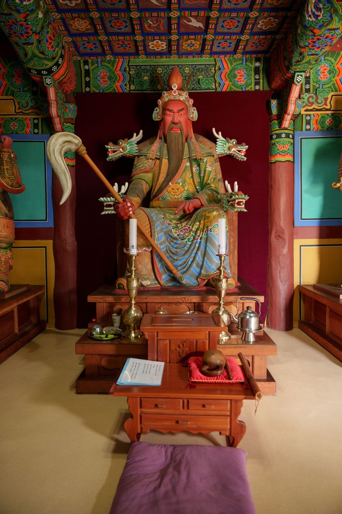

관운장, 2024
<한국 관운장>(가제) 시리즈는 과거 서울 지하철 6호선을 자주 이용하면서 지났던 동묘앞역에 대한 궁금증에서 시작된 작업이다. 자주 지나갔던 동묘지만 주로 지하로 이동했기에 동묘라는 곳이 중국 삼국지연의에 등장하는 장수 관우를 모시는 사당이라는 사실을 뒤늦게 알았다. 동묘가 관우와 관련있는 장소라는 것을 알게되었을 때 의문이 생겼다.
1800년 전에 중국에서 활약한 장수를 왜 이 머나먼 땅 한국에서 사당을 지어 모셨을까?
그리고 그를 신으로 모시고 있을줄이야!
어렸을적 관우는 만화책, 애니메이션, 게임 등 다양한 컨텐츠 속에서 활약하였다. 도원결의로 시작해서 유비, 장비와 함께 영웅적인 모습을 보여준 관우는 후에 그의 무용과 함께 충(忠)과 의리(義理)의 상징이 되었다. 미염공(美髥公)이라고 불릴만큼 길고 멋진 수염을 기른 관우는 컨텐츠에서 녹색옷을 입고 전장을 휘저었다. 그런 도상을 기억하고 동묘를 방문하였을 때 수염을 길게 기른 좌상이 사당 안에 안치되어 있었다.
한국에 관우 신앙이 전파된 것은 임진왜란 이후부터이다. 임진왜란 때 도움을 준 명나라는 관우의 음덕(陰德)으로 일본을 물리칠 수 있었기에 관우를 위한 사당을 지을 것을 요청하였다. 그렇게 한반도 여러 지역에 관왕묘가 설치되었고, 그 중 하나가 동묘이다.
임진왜란 이전에도 관우와 관련된 무용담은 전해졌었다. 하지만 임진왜란 당시 명나라 군이 조선에 주둔하며 관우에 대한 전설이 크게 유행하였다고 한다. 오늘날까지도 관우는 한국에서 활약중이다. 삼국지 게임은 계속 생산되어 긴 수염을 하고, 녹색옷을 입은 관우는 스마트폰 속에서 청룡언월도를 휘두른다. 한국의 토속신앙과 결부된 사당에서는 관우신에게 제사를 드린다. 외세의 침략을 받았던 한반도는 외세의 영웅을 계속 호명하고 있다. 한국에서 숨쉬고 있는 관우를 찾아 관우와 관련한 장소와 시각자료를 찾아보고자 한다.


 
